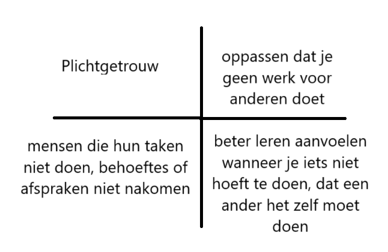
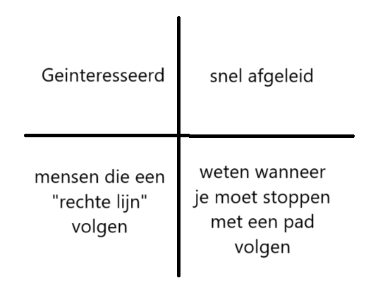

Kritisch-niewschierig gedrag
Ik kan aantonen dat ik kritisch en niewschierig gedrag vertoon omdat ik oorspronkelijk van plan was om de winkler methode te gebruiken om het zuurstof gehalte van water te berekenen terwijl de andere groepen meteen de zuurstof tabel wilden gaan gebruiken.
Inzicht kwaliteiten en leerpunten
Ik kan aantonen dat ik inzicht heb gekregen in mijn kwaliteiten en leerpunten door mijn opgestelde kernkwadranten te laten zien en mijn personaliteits test.
personaliteits test  Ontwikkeling als (toekomstige) professional
De afgelopen 3 maanden ben ik begonnen aan de opleiding Chemie, hier ga ik wat over vertellen. Ten eerste zijn er de projecten, ik vind dat deze goed zijn verlopen zo zijn er goede resultaten op geleverd en zijn alle problemmen waar we tegen aanliepen overkomen. Echter kan de samenwerking wel wat beter zo deed niet iedereen steeds evenveel of waren mensen uit hun neus aan het eten. Ik moet in het vervolg iets tegen zulk soort mensen zeggen. Dan zijn er nog de gewone vaken, Scheikunde en Wiskunde/Statistiek waren na dat ik het had opgefrist relatief simpel, Biologie heb ik echter wel wat moeite mee aangezien ik dit al 4 jaar niet meer gehad heb en het grotendeels nieuwe stof is wat ik dus niet allemaal snap, ik moet dus in het vervolg meer vragen stellen over dingen die ik niet snap.